ID : 2879
ロボット2台以上のセットアップ手順
ロボット2台以上で使用する場合は、マスタコントローラとスレーブコントローラのセットアップをそれぞれ行ないます。
- 円形トラッキングのキャリブレーション作業は、マスタ、スレーブの順で行います。
- スレーブ側の軸設定は"無効"になっている必要があります。"無効"になっていない場合は、"無効"に設定してください。
- スレーブの台数やターンテーブルの台数によっては、マスタのCPU性能により十分な性能が出ない可能性があります。 その場合には、スレーブの台数やターンテーブルの台数を減らし、システムを分離してマスタのCPU負荷の低減を検討してください。 もしくは、マスタにハイスペックCPUを搭載したコントローラを使用することを検討してください。
増設LANボードを使用する場合の設定
増設LANボードを使用して、マスタコントローラとスレーブコントローラ間を通信する場合、"マルチキャスト.インターフェース [IP Address]"というパラメータを、初期値から変更する必要があります。詳細は、"増設のLANボードを使用してマスタとスレーブ間を通信する場合"を参照してください。
マスタコントローラ設定手順
1 マスタ・スレーブ設定画面の表示
「トラッキング」画面において、スレーブ設定にしたいターンテーブルに対して 画面上の[マスタ・スレーブ設定]ボタンを押します。
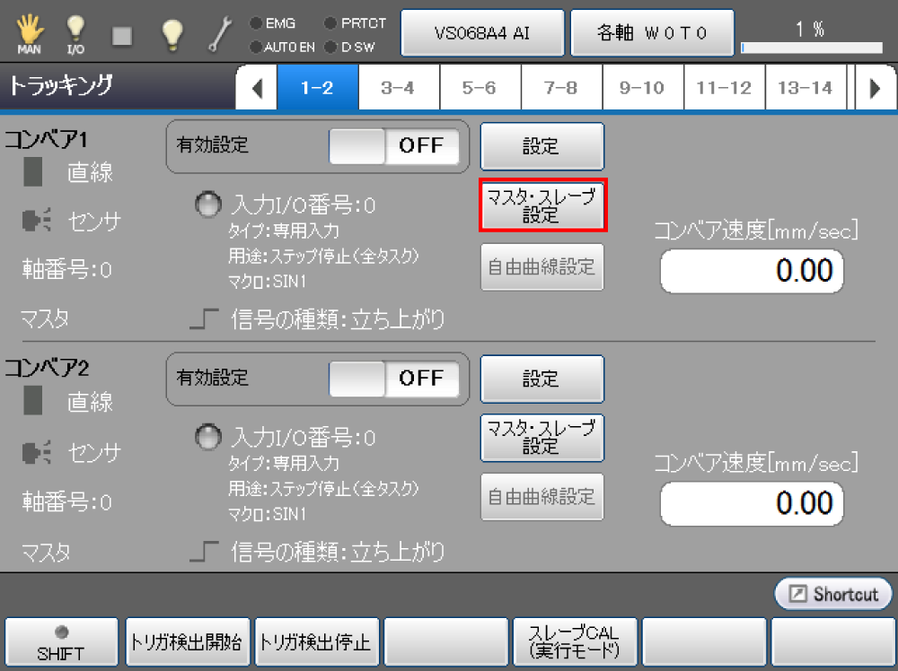
「マスタ・スレーブ設定」画面が表示されます。
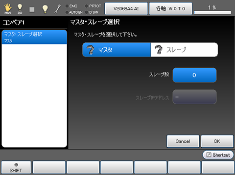
2 スレーブの台数設定
[スレーブ数]を押します。
「スレーブ数」画面が表示されます。
テンキーを使ってスレーブ数を入力し、[OK]を押します。
この例ではスレーブ3台を想定して説明します。
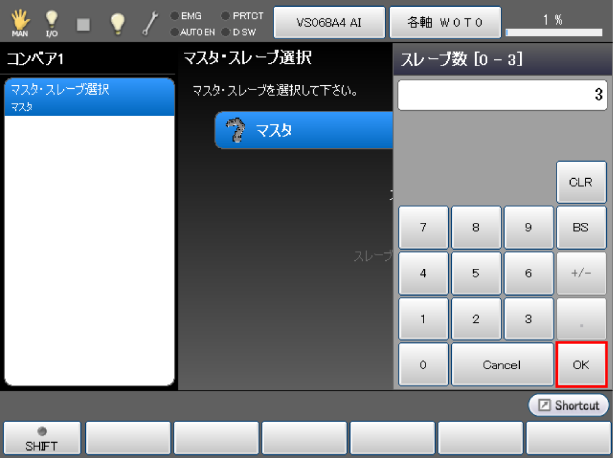
3 スレーブのIPアドレス設定
[スレーブIPアドレス]の「スレーブ1」を押します。
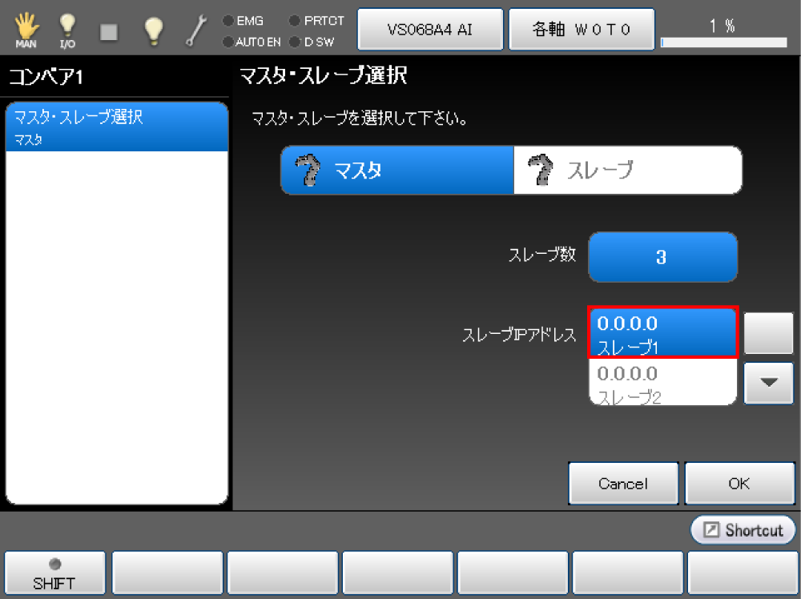
他のスレーブを設定する場合は上下矢印キーを押して選択します。
「スレーブIPアドレス」画面が表示されます。
テンキーを使ってスレーブコントローラのIPアドレスを入力し、[OK]を押します。
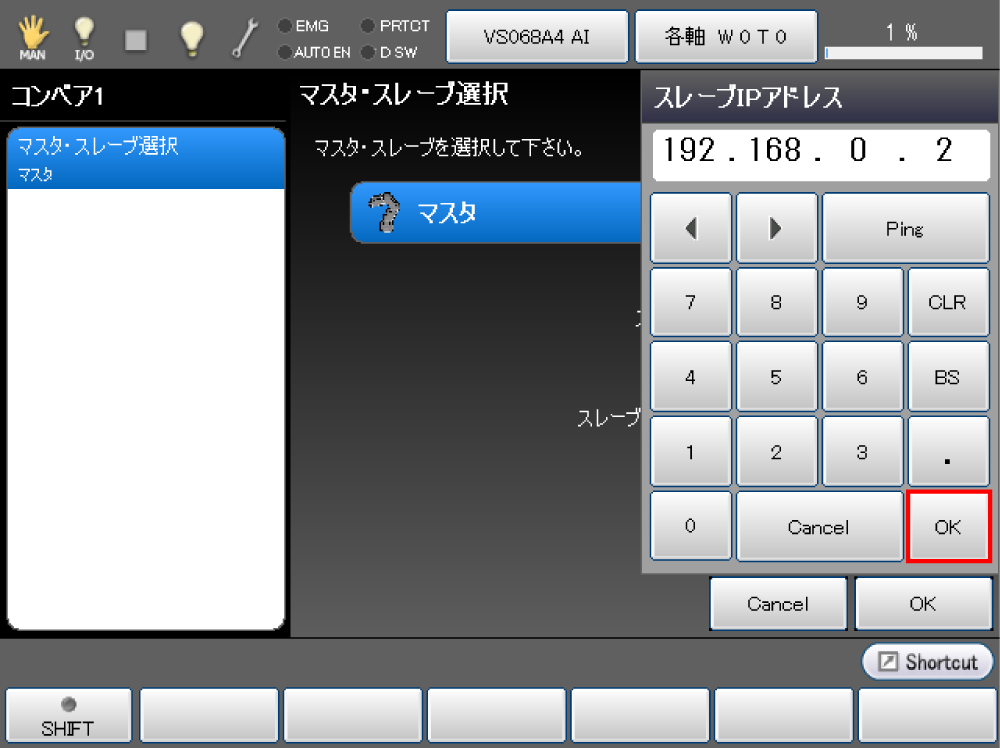
Step3を繰返し同様に全てのスレーブコントローラのIPアドレスを入力します。
4 設定の反映
マスタコントローラの設定が完了後、[OK]を押します。
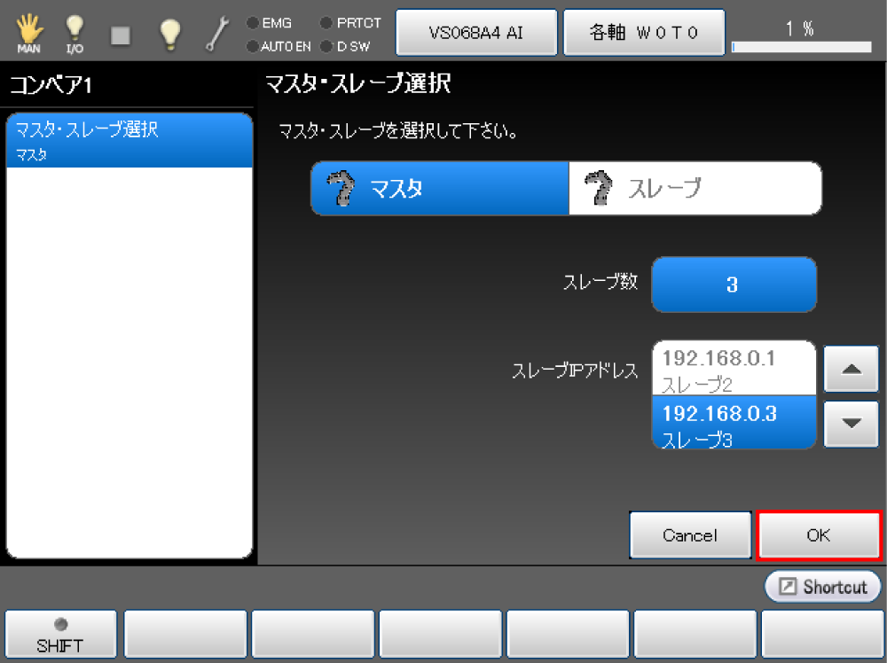
システムメッセージが表示されますので、よければ[OK]を押します。
[Cancel]を押すと、設定は反映されません。
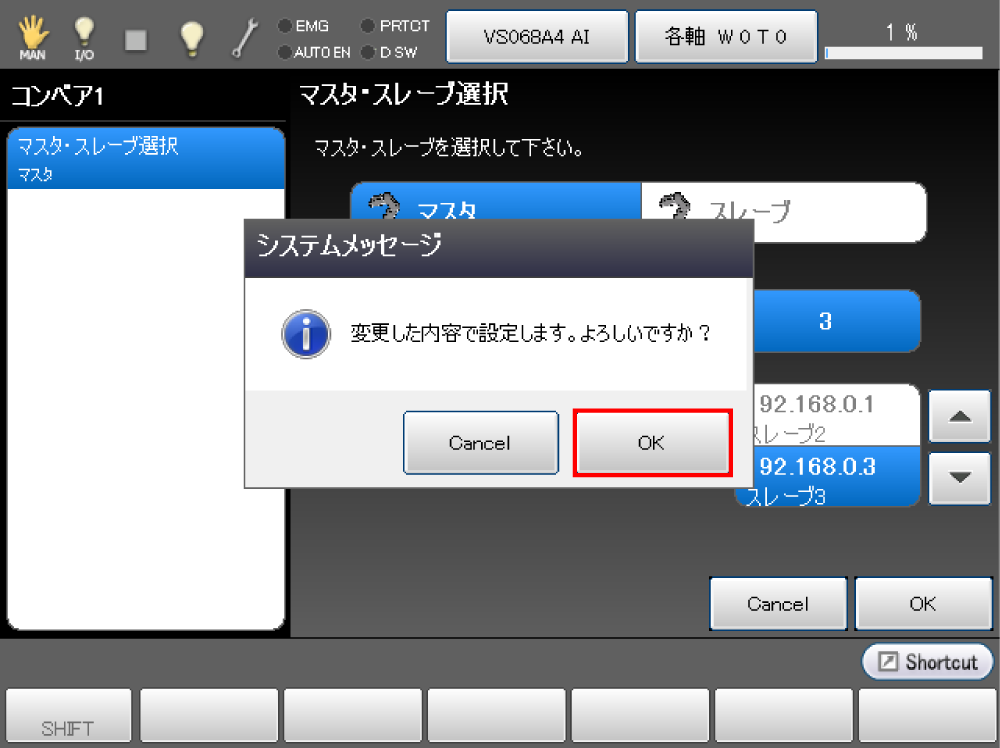
設定が保存され、「トラッキング」画面に戻ります。
5 ターンテーブルのセットアップ
ターンテーブルごとの[設定]を押して、セットアップを行ないます。
その後の設定手順については、ターンテーブル1台、ロボット1台の組合せと同じです。
「ハードウェアの選択」、「ハードウェアの接続確認」、「キャリブレーション」を参照ください。
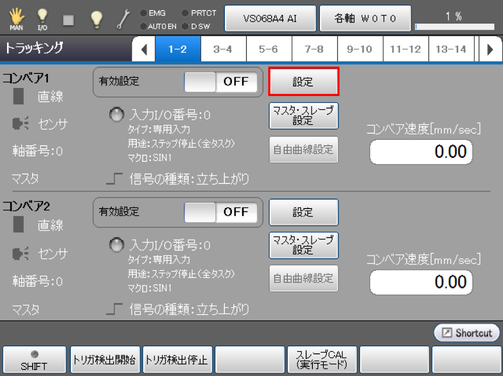
スレーブコントローラ設定手順
1 マスタ・スレーブ設定画面の表示
「トラッキング」画面において、マスタ設定にしたいターンテーブルに対して 画面上の[マスタ・スレーブ設定]ボタンを押します。
「マスタ・スレーブ設定」画面が表示されます。
2 マスタのIPアドレス設定
[スレーブ]を押します。
「スレーブ設定」画面が表示されます
[マスタIPアドレス]を押します。
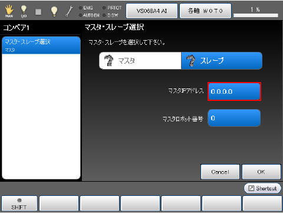
「マスタIPアドレス」画面が表示されます。
テンキーを使ってマスタコントローラのIPアドレスを入力し、[OK]を押します。
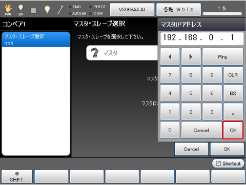
3 マスタロボット番号の設定
ロボット番号を指定します。この操作はVer.2.7.*以降からできます。
マスタがデュアルアームの場合は、コンベアトラッキングのマスタコントローラになるほうのロボット番号を指定します。デュアルアームでない場合は「0」のまま変更しません。
変更する場合は、まず、マスタロボット番号の数字部分をタッチします。
デュアルアーム制御におけるコンベアトラッキングはVer.2.8.*以降から対応しています。
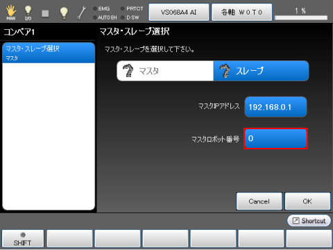
[マスタロボット番号]画面が表示されるので、数字を入れて、[OK]を押します。
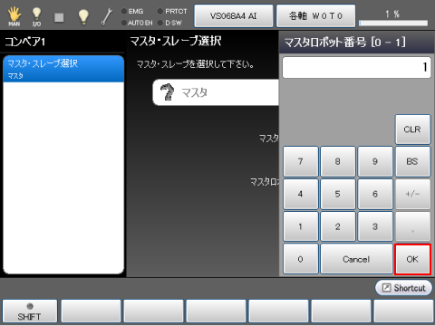
4 設定の反映
全ての項目の設定が完了後、[OK]を押します。
システムメッセージが表示されますので、よければ[OK]を押します。
[Cancel]を押すと、設定は反映されません。
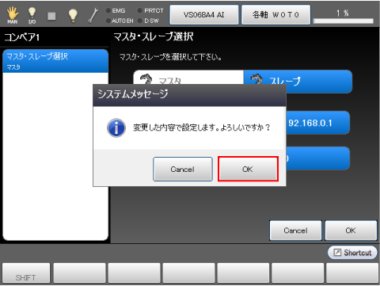
設定が保存され、「トラッキング」画面が表示されます。
システムメッセージの内容を確認し、[OK]を押します。

5 スレーブCAL実行モードへ移行
Ver.2.7.*より前はこの操作が必要です。
マスタコントローラの[スレーブCAL（実行モード）]を実行します。
操作経路：基本画面 - [F10 トラッキング] - [F4 スレーブCAL（実行モード）]
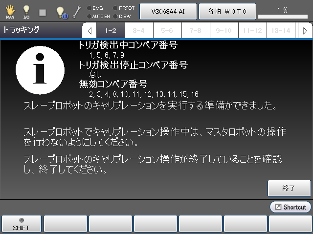
スレーブコントローラのキャリブレーション中は、マスタコントローラを操作しないようにしてください。
6 マスタコントローラとの接続確認
スレーブコントローラ側の「トラッキング」画面 - [設定]を押します。
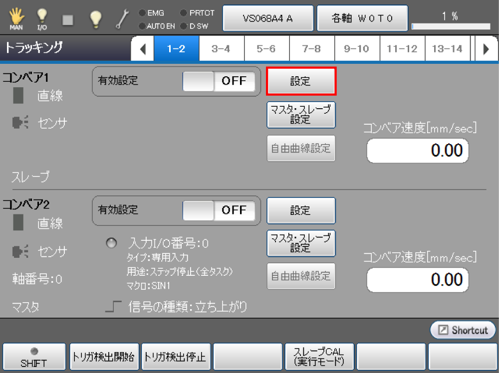
コンベア設定画面が表示されます。
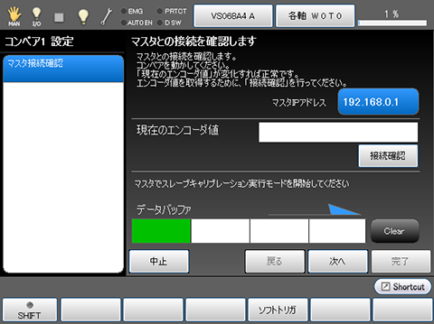
ターンテーブルを作動させ、[現在のエンコーダ値]、[データバッファ]が変化することを確認します。値が変化すれば正常です。
ここで「データバッファ」は、「トラッキングバッファ」を表しています。
7 ターンテーブルのセットアップ
その後の設定手順については、ターンテーブル1台、ロボット1台の組合せと同じです。
「ハードウェアの選択」、「ハードウェアの接続確認」、「キャリブレーション」を参照ください。
8 スレーブCAL実行モードの終了
Ver.2.7.*より前はこの操作が必要です。
キャリブレーション完了後、マスタコントローラの[モード終了]を押します。
スレーブとして使用していたロボットをマスタとして使用する場合
スレーブとして使用していたロボットをマスタとして使用する場合、以下の項目を変更してご使用ください。
- 円形トラッキング用エンコーダと接続する
- トリガ信号のI/Oコネクタと接続する
- 円形トラッキングのエンコーダが未使用になっているため、エンコーダのみ有効に変更する
- スレーブとして設定しているため、マスタに設定を変更する
スレーブロボットを使用しない場合
複数台のロボットを接続した構成で、使用しないロボットがある場合には、マスタロボットで設定したスレーブのリストから削除して使用してください。
ターンテーブル上のワークが、稼動中のロボットでは把持できなかった場合、そのワークのデータはマスタのメモリ内に保持されます。保持されるデータの数が多くなると、稼動中のロボットにワークを割り当てる探索計算の時間が長くなり、ロボットが把持動作を開始するタイミングが遅くなります。
ID : 2879